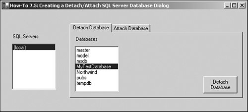
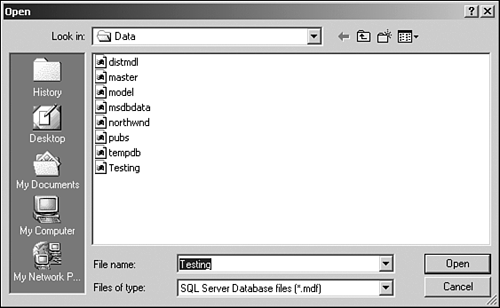

Situations sometimes arise that require a database to be attached, detached, or both. Perhaps your client needs to move the database from one SQL Server to another. This How-To shows you the methods you can use to perform these tasks.
Before diving into solving some of the tasks that can be accomplished in the How-Tos just listed, it's important to discuss the SQL-DMO object model, as well as create a reference to it.
Many times, you've used the Enterprise Manager to move databases for users by attaching and detaching them. It would be nice to be able to perform this task without users calling you. At he very least, you'd like to be able to walk users through the details over the phone, without having to use the Enterprise Manager. How do you create a dialog box to perform this task?
This is probably the easiest of the How-Tos to create for this chapter, other than How-To 7.1. For this task, you will be using two methods of the SQLServer object: DetachDB and AttachDBWithSingleFile.
Along with the two methods just mentioned, you will also be using a Tab control to choose which task to perform, as well as an OpenFile Dialog control to allow the user to choose the file to attach.
Open and run the VB.NET -Chapter 7 solution. From the main Windows form, click on the command button with the caption How-To 7.5. You can select a database, such as the one displayed in Figure 7.11, and click the Detach button. You will see the database disappear from the list of databases to choose from.

After you have chosen the database, you can reattach the database by clicking on the tab labeled Attach Database. You can then type in the name you want to attach the database as, and click on the Locate File button to locate the database file to attach (see Figure 7.12.)

Select the file and click Open. To attach the file, click the Attach Database button. The database file will then be attached, and you can see it in the list of databases. To check this, you can look at the list back on the Detach Database tab; that list was refreshed when you clicked the Attach Database button.
Create a Windows Form.
Add a Tab control from the Windows Form Controls list. Click the builder button in the Tab Pages property, and add two pages. Set the Text property for Page1 to Detach Database, and the Text property for Page2 to Attach Database.
Add an OpenFileDialog control from the Windows Form Controls list. Go ahead and leave the default name given to the control, but make a note of it.
Place the other controls shown in Figure 7.10 and 7.11, with the following properties set as in Table 7.9.
|
Object |
Location |
Property |
Setting |
|---|---|---|---|
|
Label |
Main Form |
Name |
Label1 |
|
Text |
SQL Servers |
||
|
ListBox |
Main Form |
Name |
lstSQLServers |
|
Label |
Main Form |
Name |
Label2 |
|
Text |
Databases |
||
|
ListBox |
Tab Page1 |
Name |
lstDatabases |
|
Button |
Tab Page1 |
Name |
btnDetach |
|
Text |
&Detach Database |
||
|
Label |
Tab Page2 |
Name |
Label3 |
|
Text |
File to Attach |
||
|
TextBox |
Tab Page2 |
Name |
txtFileToAttach |
|
Label |
Tab Page2 |
Name |
Label4 |
|
Text |
Name of Attached Database |
||
|
TextBox |
Tab Page2 |
Name |
txtNameOfAttach |
|
Button |
Tab Page2 |
Name |
btnLocate |
|
Text |
&Locate File |
||
|
Button |
Tab Page2 |
Name |
btnAttach |
|
Text |
&Attach Database |
On the form, add the code in Listing 7.24 to the Load event. This will look familiar from How-To 7.1. For an examination of the LoadSQLServers routine, check out step 4 in that How-To.
Private Sub frmHowTo7_5_Load(ByVal sender As System.Object, _
ByVal e As System.EventArgs) Handles MyBase.Load
LoadSQLServers(Me.lstSQLServers)
End Sub
On the lstSQLServers list box, add the code in Listing 7.25 to the SelectedIndexChanged event. This routine toggles the btnDetach button, depending on whether a SQL Server and database has been selected. It then calls GetSQLDatabases, described in step 6 of How-To 7.1.
Private Sub lstSQLServers_SelectedIndexChanged(ByVal sender As System.Object,
ByVal e As System.EventArgs) _
Handles lstSQLServers.SelectedIndexChanged
If lstSQLServers.SelectedItems.Count > 0 And _
lstDatabases.SelectedItems.Count > 0 Then
Me.btnDetach.Enabled = True
Else
Me.btnDetach.Enabled = False
End If
GetSQLDatabases(Me.lstSQLServers.SelectedItem, Me.lstDatabases)
End Sub
On the lstDatabases list box, add the code in Listing 7.26 to the SelectedIndexChanged event. This routine toggles the btnDetach button, depending on whether a SQL Server and database have been selected.
Private Sub lstDatabases_SelectedIndexChanged(ByVal sender As System.Object,
ByVal e As System.EventArgs) _
Handles lstDatabases.SelectedIndexChanged
If lstSQLServers.SelectedItems.Count > 0 And _
lstDatabases.SelectedItems.Count > 0 Then
Me.btnDetach.Enabled = True
Else
Me.btnDetach.Enabled = False
End If
End Sub
On the btnDetach button, add the code in Listing 7.27 to the Click event. After connecting to the server, the DetachDB method is called. Then the GetSQLDatabases routine is called to refresh the database list.
Private Sub btnDetach_Click(ByVal sender As System.Object, _
ByVal e As System.EventArgs) Handles btnDetach.Click
Dim oSQLSvr As New SQLDMO.SQLServer()
Dim strDetachMsg As String
Try
'-- Connect to the server
oSQLSvr.LoginSecure = True
oSQLSvr.Connect(Me.lstSQLServers.SelectedItem)
'-- Perform the detach
strDetachMsg = oSQLSvr.DetachDB(Me.lstDatabases.SelectedItem)
'-- Refresh the databases
GetSQLDatabases(Me.lstSQLServers.SelectedItem, Me.lstDatabases)
Catch excp As Exception
MessageBox.Show(excp.Message)
Exit Sub
End Try
MessageBox.Show("Database Detached")
End Sub
Add the code in Listing 7.28 to the Click event of btnLocateFile. This routine uses the OpenFileDialog control to retrieve the name of the file you want to attach.
Private Sub btnLocateFile_Click(ByVal sender As System.Object, _
ByVal e As System.EventArgs) Handles btnLocateFile.Click
With OpenFileDialog1
.InitialDirectory = _
"E:\Program Files\Microsoft SQL Server\MSSQL\Data\"
.Filter = "SQL Server Database files (*.mdf)|*.mdf"
.ShowDialog()
Me.txtFileToAttach.Text = .FileName
End With
End Sub
Add the code in Listing 7.29 to the TextChanged event of txtFileToAttach and txtNameToAttach as appropriate.
Private Sub txtFileToAttach_TextChanged(ByVal sender As System.Object,
ByVal e As System.EventArgs) Handles txtFileToAttach.TextChanged
If Len(Me.txtFileToAttach.Text) > 0 And _
Len(Me.txtNameOfAttach.Text) > 0 Then
Me.btnAttach.Enabled = True
Else
Me.btnAttach.Enabled = False
End If
End Sub
Private Sub txtNameOfAttach_TextChanged(ByVal sender As System.Object,
ByVal e As System.EventArgs) Handles txtNameOfAttach.TextChanged
If Len(Me.txtFileToAttach.Text) > 0 And _
Len(Me.txtNameOfAttach.Text) > 0 Then
Me.btnAttach.Enabled = True
Else
Me.btnAttach.Enabled = False
End If
End Sub
Add the code in Listing 7.30 to the Click event of btnAttach. After connecting to the server, this code calls the AttachDBWithSingleFile method. Then it refreshes the database list using the routine GetSQLDatabases.
Private Sub btnAttach_Click(ByVal sender As System.Object, _
ByVal e As System.EventArgs) Handles btnAttach.Click
Dim oSQLSvr As New SQLDMO.SQLServer()
Dim strAttachMsg As String
Try
oSQLSvr.LoginSecure = True
oSQLSvr.Connect(Me.lstSQLServers.SelectedItem)
'-- Attach the database
strAttachMsg = oSQLSvr.AttachDBWithSingleFile( _
Me.txtNameOfAttach.Text, Me.txtFileToAttach.Text)
'-- Refresh the databases
GetSQLDatabases(Me.lstSQLServers.SelectedItem, Me.lstDatabases)
Catch excp As Exception
MessageBox.Show(excp.Message)
Exit Sub
End Try
MessageBox.Show("Database Attached")
End Sub
This How-To uses the DetachDB and AttachDBWithSingleFile methods to attach and detach a database.
You can enhance this routine by allowing for databases that have multiple files to be attached and detached.
There is so much you can do with the APIs that SQL Server provides. Open the Enterprise Manager and look at some of the various utilities, including Data Transformation Services. Then open the Object Browser to the SQL-DMO and SQL-DTS libraries, and notice the correlation between tasks that are displayed using the Enterprise Manager and the APIs.